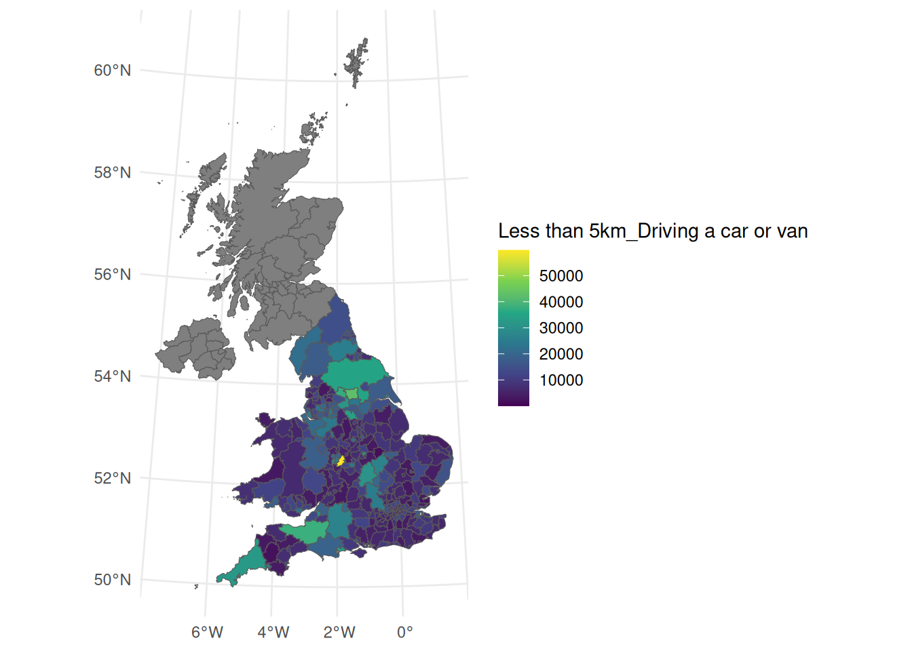

library(tidyverse)
library(sf)Getting transport datasets with R
1 Review Homework
You should now be familiar with the basics of R, Quarto and the structure of transport datasets, having completed the homework from the previous session.
We will do a demo of trying to reproduce the demo from last week and discuss any issues you had running the code in Chapter 13 of Geocomputation with R.
2 Prerequisites
Note: you may need to install the pct package as follows:
remotes::install_github("ITSLeeds/pct")We will also load the following packages:
3 Getting started with GIS in R
Note that this practical builds on content in Geocomputation with R.
4 Getting OpenStreetMap data
Work through the reproducible code in the “Introducing osmextract” vignette hosted at https://docs.ropensci.org/osmextract/articles/osmextract.html.
5 Getting road traffic casualty data
Work through the reproducible code in the “Getting started with stats19” vignette hosted at docs.ropensci.org/stats19.
6 Boundary datasets
Boundary datasets are useful for mapping and spatial analysis, providing the geographical context for other datasets. You can download geographic datasets directly from the ONS Geoportal.
You can also search for boundary datasets using the esri2sf package, which provides a function esrisearch to search for datasets on the ESRI ArcGIS platform. To illustrate this programatic way of getting boundary data, we will search for the “Local Authority Districts December 2024 Boundaries UK” dataset and download it using the arcgis package.
pak::pkg_install("elipousson/esri2sf")
remotes::install_github("r-arcgis/arcgis", dependencies = TRUE)
res = esri2sf::esrisearch("Local Authority Districts (May 2023) Boundaries UK")
res = res |>
dplyr::filter(type == "Feature Service") |>
# # 2023 versions:
# dplyr::filter(str_detect(title, "2023")) |>
# BUC:
dplyr::filter(str_detect(title, "BUC"))
res$title
u_from_res = paste0(res$url[1], "/0")
library(arcgis)
res_sf = arc_read(u_from_res)
plot(res_sf$geometry)7 Census data
7.1 The ONS “create a custom dataset” tool
The Office for National Statistics (ONS) provides a tool to create custom datasets. The tool is flexible and provides datasets in a variety of formats, including CSV. Give the tool a try at www.ons.gov.uk/datasets/create. To test the tool, try to get data on travel to work patterns for all usual residents in England and Wales at the local authority level (note: you may need to change the file name to match the one you downloaded).
Reading layer `lad_boundaries_2023' from data source
`/home/runner/work/tds/tds/p2/lad_boundaries_2023.geojson'
using driver `GeoJSON'
Simple feature collection with 361 features and 11 fields
Geometry type: POLYGON
Dimension: XY
Bounding box: xmin: -116.1928 ymin: 7054.1 xmax: 655653.9 ymax: 1220310
Projected CRS: OSGB36 / British National Gridtravel_to_work_lad = readr::read_csv("custom-filtered-2025-02-04T00_06_30Z.csv")
# names(travel_to_work_lad)
# [1] "Lower tier local authorities Code"
# [2] "Lower tier local authorities"
# [3] "Distance travelled to work (8 categories) Code"
# [4] "Distance travelled to work (8 categories)"
# [5] "Method used to travel to workplace (12 categories) Code"
# [6] "Method used to travel to workplace (12 categories)"
# [7] "Observation"
travel_to_work_updated = travel_to_work_lad |>
select(
LAD23CD = `2023 Lower tier local authorities Code`,
Mode = `Method used to travel to workplace (12 categories)`,
Distance = `Distance travelled to work (8 categories)`,
Observation = Observation
)
# Pivot wider:
ttw_wide = travel_to_work_updated |>
pivot_wider(names_from = c(Distance, Mode), values_from = Observation)
summary(res_sf[["LAD23CD"]] %in% travel_to_work_lad[[1]]) Mode FALSE TRUE
logical 44 317 # Other way around:
summary(travel_to_work_lad[[1]] %in% res_sf[["LAD23CD"]]) Mode TRUE
logical 30432 # names(ttw_wide)8 Joining datasets
Two key ways to join datasets are by spatial location and by a common key. We will demonstrate the latter using the dplyr package.
lad_joined = left_join(
res_sf,
ttw_wide
)Let’s visualise the results with a choropleth map made using ggplot2.
ggplot(lad_joined) +
geom_sf(aes(fill = `Less than 5km_Driving a car or van`)) +
scale_fill_viridis_c() +
theme_minimal()
9 Homework
- In preparation for the next practical session, take a read of and try to reproduce the code in the vignette “An introduction to origin-destination data” for the
odpackage.- Import some OD data using the
pctpackage, as documented at itsleeds.github.io/pct.
- Import some OD data using the
- Download and visualise 3 transport-related datasets of your choice and save the results in a reproducible .qmd file.
- Bonus: generate a .pdf document showing the results.
- Take a quick read of, and try to reproduce some of the code in, at least three of the chapters in R4DS: